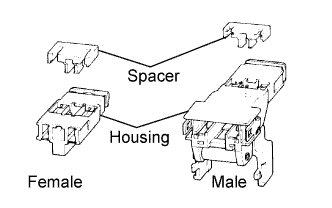

AIRBAG SYSTEM > PRECAUTION |
| Condition | Waiting Time |
| Vehicle enrolled in G-BOOK system | 6 minutes |
| Vehicle not enrolled in G-BOOK system | 1 minute |
| 1.HANDLING PRECAUTIONS FOR AIRBAG SENSORS |
Before starting the following operations, wait for at least 90 seconds after disconnecting the cable from the negative (-) battery terminal:
Replacement of the airbag sensors.
Adjustment of the front/rear doors of the vehicle equipped with side airbags and curtain shield airbags (fitting adjustment).
When connecting or disconnecting the airbag sensor connectors, make sure that each sensor is installed in the vehicle.
Do not use airbag sensors which have been dropped during operation or transportation.
Do not disassemble the airbag sensors.
| 2.INSPECTION PROCEDURE FOR VEHICLE INVOLVED IN ACCIDENT |
When the airbag has not deployed, confirm the DTCs by checking the SRS warning light. If there is any malfunction in the SRS airbag system, perform troubleshooting.
When any of the airbags have deployed, replace the airbag sensors and check the installation condition.
| 3.SRS CONNECTORS |
SRS connectors are located as shown in the following illustration.
| Item | Application |
| Terminal Twin-lock Mechanism | Connectors 8, 11, 12, 13, 14, 23, 24 |
| Activation Prevention Mechanism | Connectors 2, 4, 7, 13, 19, 21 |
| Half Connection Prevention Mechanism | Connectors 8, 12, 13, 19, 21, 23 |
| Connector Position Assurance Mechanism | Connectors 10, 16, 18, 33 |
| Connector Lock Mechanism (1) | Connectors 6 |
| Connector Lock Mechanism (2) | Connectors 2, 4 |
| Improper Connection Prevention Lock Mechanism | Connectors 1, 3 |
|  |
All connectors in the SRS, except the seat position sensor connector, are colored yellow to distinguish them from other connectors. These connectors have special functions and are specially designed for the SRS. All SRS connectors use durable gold-plated terminals which are placed in the locations shown below to ensure high reliability.
Terminal twin-lock mechanism:
All connectors with a terminal twin-lock mechanism have a two-piece component consisting of a housing and spacer. This design enables the terminal to be locked securely by two locking devices (the retainer and the lance) to prevent terminals from coming out.
Activation prevention mechanism:
All connectors with an activation prevention mechanism contain a short spring plate. When these connectors are disconnected, the short spring plate creates a short circuit by automatically connecting the positive (+) and negative (-) terminals of the squib.
Half connection prevention mechanism:
If the connector is not completely connected, the connector is disconnected by the force of the spring so that no continuity exists.
Connector position assurance mechanism:
The CPA (yellow part) slides only when the housing lock (white part) is completely engaged, which completes the connector engagement.
Connector lock mechanism (1):
Locking the connector lock button connects the connector securely.
Connector lock mechanism (2):
Both the primary lock with holder lances and the secondary lock with retainer prevent the connectors from becoming disconnected.
Improper connection prevention lock mechanism:
When connecting the holder, the lever is pushed into the lock position by rotating around the A axis to lock the holder securely.